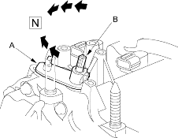
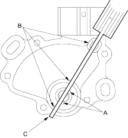
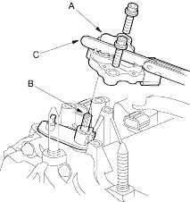
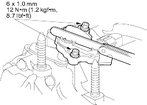

- Set the control lever (A) to
 position by turning it.
position by turning it.
NOTE: Do not squeeze the end of the control shaft tips (B) together when turning into position. If the tips are squeezed together it will cause a faulty signal or position due to the play between the control shaft and the switch.

- Align the cutouts (A) on the rotary-frame with the neutral positioning cutouts (B) on the transmission range switch, then put a 2.0 mm (0.08 in.) feeler gauge blade (C) in the cutouts to hold it in the position.
NOTE: Be sure to use a 2.0 mm (0.08 in.) blade or equivalent to hold the switch in the
position.

- Install the transmission range switch (A) gently on the control shaft (B) with holding the position with the 2.0 mm (0.08 in.) blade (C).

- Tighten the bolts on the transmission range switch while you continue to hold the position.
Do not move the transmission range switch when tightening the bolts. Remove the feeler gauge.
